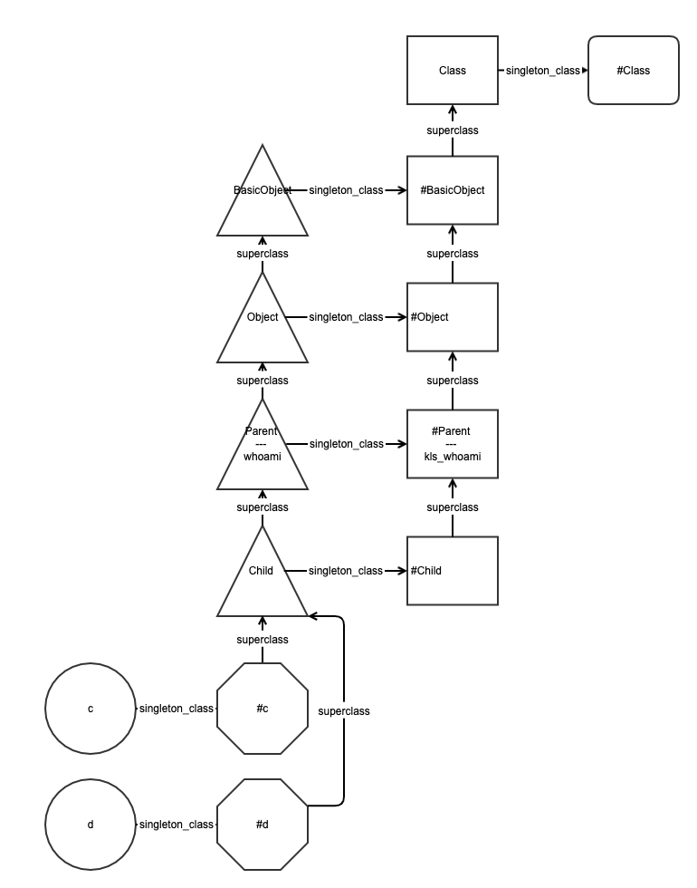
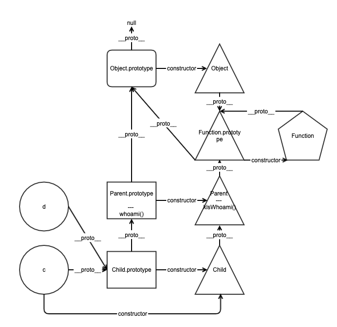
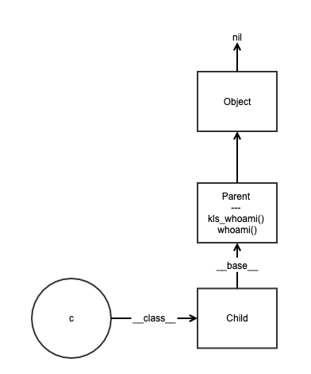

Call a Class Method from an Instance in Python
- Author: Damon Yuan
- Date: 2020-02-24
I'm brushing up my Python skills recently and trying to figure out the inheritance chain in Python. However to my surprise, I accidently found that the class method can be invoked from a instance,
#!/usr/bin/env python
class Parent:
@classmethod
def kls_whoami(cls):
print('class')
def whoami(self):
print('instance')
class Child(Parent):
def __init__(self):
print('init')
c = Child()
c.whoami() # instance
Child.kls_whoami() # class
c.kls_whoami() # class -> ? why
I was shocked because it never happens in JavaScript, Ruby or other languages that I know, and it seems to have broken the principle of encapsulation - how come a class method can be called from an object, why is it so special and and what's the differences between Python and other languages' inheritance models?
As the questions haunting around my mind, I decided to dig into it.
Why Ruby and JavaScript do not have this problem
One of the efficient study pattern is learning through comparison. I picked Ruby and JavaScript for this purpose in this case.
Ruby
First of all let's check the Ruby's inheritance model.
My test is based on
Tested in irb,
#!/usr/bin/ruby -w
class Parent
def self.kls_whoami
puts 'class'
end
def whoami
puts 'instance'
end
end
class Child < Parent
end
c = Child.new
d = Child.new
c.whoami # instance
Child.kls_whoami # class
c.kls_whoami # undefined method
and the inheritance model is

When c.whoami is invoked, the search chain is
- check if object
c's singleton_class#chas thewhoamimethod - if it's not there, it goes up to the ancestor chain -
Childclass - if not found in
Child, it would check theParentclass. Here we find the instance methodwhoami NoMethodErrorwould be throw if there're no method with this signature found
When Child.kls_whoami is invoked, the search chain is
- check if the
Childclass's singleton_class#Childcontains thekls_whoami - if not, climb up to its superclass,
#Parent. Here we find the class methodkls_whoami
Through the analysis we know the instance methods and class methods live in different namespaces - the singleton_class of the object / the class and the singleton class of the class. And isolation ensures no static methods will be touch when called on an instance of that class.
JavaScript
We will do the similar analysis on JavaScript, which is famous for the prototype pattern in inheritance model,
#!/usr/bin/env node
class Parent {
static klsWhoami() {
console.log('class')
}
whoami() {
console.log('instance')
}
}
class Child extends Parent {
}
let c = new Child();
c.whoami(); # instance
Child.klsWhoami(); # class
c.klsWhoami(); # TypeError: c.klsWhoami is not a function
and the inheritance model is

When c.whoami() is invoked, the search chain is
- check if
Child.prototypecontains the instance method - if not, climb up to the
Parent.prototype. Here we find thewhoami()instance method
When Child.klsWhoami() is invoked, the search chain is
- check if
Childfunction / constructor contains the class method - if not, check its ancestor
Parentto see if it's there. Here we find theklsWhoamiclass method
Similarly we know now in JavaScript, instance methods and class methods exist in different namespace, so that when call the klsWhoami() method on c object, TypeError: c.klsWhoami is not a function will be throw.
How is Python's inheritance model
In Python, Class and instance methods live in the same namespace, it also enforces that the signature of instance methods and class/static methods cannot be the same.
The magic that transforms your obj.method(args) call into method(obj, args) is inside a .get() implementation of the function object that is, in fact, a non-data descriptor.
This works for regular instance methods just like it does for class methods or static methods. So, if you call a static method with obj.method(args), then it’s automatically transformed into method(args). Similarly, if you call a class method with obj.method(type(obj), args), then it’s automatically transformed into method(type(obj), args).
Reference: (Python Descriptors: An Introduction)

Much simpler, right?
When c.whoami() is invoked, the search chain will
- check if the instance's namespace contains the method. Here we find the bound method and using the descriptor to access the method, the descriptor will help to call the method using
Parent.whoami(c) - Otherwise, check if the type of the instance and see if the type's namespace contains the method
- if still not found, escalate through the chain until it reach the end
When c.kls_whoami() is called, the search chain will
- check if the instance's namespace contains the method. Here we find the bound method and using the descriptor to access the method, the descriptor will help to call the method using
Parent.kls_whoami(type(c)) - Otherwise, check if the type of the instance and see if the type's namespace contains the method
- if still not found, escalate through the chain until it reach the end
Child.kls_whoami() and Parent.kls_whoami() is similar except that they are starting from the namespace of Child class and Parent class respectively.
Both the class method and the instance method live in the Parant class's namespace, and the built-in non-data descriptor will help the instance to find the bound methods and convert the instance called upon to the arguments required by the method. For these reasons, a class method can be called on a python object instance without throwing any exceptions.